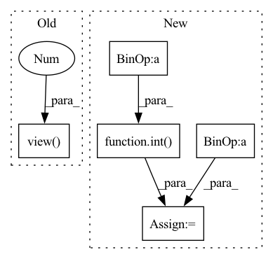

Pattern ID :5405
Before Change
x (`torch.Tensor`):
Tensor with size (b, d, h, w, c)
x = windows.view( b, d // window_size[0], h // window_size[1], w // window_size[2],
window_size[0], window_size[1], window_size[2], -1 )
x = x.permute(0, 1, 4, 2, 5, 3, 6, 7).contiguous().view(b, d, h, w, -1)
return x
After Change
Returns:
x: (b, h, w, c)
b = int( windows.shape[0] / (h * w / window_size / window_size))
x = windows.view(b, h // window_size, w // window_size, window_size, window_size, -1)
x = x.permute(0, 1, 3, 2, 4, 5).contiguous().view(b, h, w, -1)
return x
In pattern: SUPERPATTERN
Frequency: 3
Non-data size: 5
Instances Fragment ID: 19201957
Project Name: towhee-io/towhee
Commit Name: 627d898534b4b2092f8f3a2f2090524a7174278f
Time: 2022-07-10
Author: 106302799+jinlingxu06@users.noreply.github.com
File Name: towhee/models/utils/window_reverse.py
M Class Name: AnonimousClass
N Class Name: AnonimousClass
M Method Name: window_reverse(4)
N Method Name: window_reverse(6)
M Parent Class:
N Parent Class:
M File Name: towhee/models/utils/window_reverse.py
N File Name: towhee/models/utils/window_reverse.py
M Start Line: 5
M End Line: 26
N Start Line: 5
N End Line: 17
Before Change
Returns:
x: (B, D, H, W, C)
x = windows.view( B, D // window_size[0], H // window_size[1], W // window_size[2], window_size[0], window_size[1], window_size[2], -1 )
x = x.permute(0, 1, 4, 2, 5, 3, 6, 7).contiguous().view(B, D, H, W, -1)
return x
After Change
Returns:
x: (B, H, W, C)
B = int( windows.shape[0] / (H * W / window_size / window_size))
x = windows.view(B, H // window_size, W // window_size, window_size, window_size, -1)
x = x.permute(0, 1, 3, 2, 4, 5).contiguous().view(B, H, W, -1)
return x
Fragment ID: 19201925
Project Name: bwittmann/transoar
Commit Name: 829a2ecf6cd071bfc222fe830ebca1ed7a9cd8c4
Time: 2021-11-08
Author: bastian.wittmann@tum.de
File Name: transoar/models/backbones/swin_transformer.py
M Class Name: AnonimousClass
N Class Name: AnonimousClass
M Method Name: window_reverse(4)
N Method Name: window_reverse(6)
M Parent Class:
N Parent Class:
M File Name: transoar/models/backbones/swin_transformer.py
N File Name: transoar/models/backbones/swin_transformer.py
M Start Line: 54
M End Line: 65
N Start Line: 58
N End Line: 60
Before Change
kernel = kernel.view(
batch_size, self.groups, self.kernel_size[0] * self.kernel_size[1], height, width).unsqueeze(dim=2)
// Apply kernel to produce output
output = (kernel * input_unfolded).sum(dim=3).view( batch_size, -1 , height, width)
return output
class Involution3d(nn.Module):After Change
input_unfolded = self.unfold(self.initial_mapping(input))
input_unfolded = input_unfolded.view(batch_size, self.groups, self.out_channels // self.groups,
self.kernel_size[0] * self.kernel_size[1],
int( input_unfolded.shape[-1] ** 0.5) , int(input_unfolded.shape[-1] ** 0.5))
// Generate kernel
kernel = self.span_mapping(self.sigma_mapping(self.reduce_mapping(self.o_mapping(input))))
kernel = kernel.view(batch_size, self.groups, self.kernel_size[0] * self.kernel_size[1],
kernel.shape[-2], kernel.shape[-1]).unsqueeze(dim=2)
// Apply kernel to produce output
output = (kernel * input_unfolded).sum(dim=3)
// Reshape output
output = output.view(batch_size, -1, output.shape[-2], output.shape[-1])
return output
Fragment ID: 19201930
Project Name: christophreich1996/involution
Commit Name: 21da0f1b6561123a526df72f821ca17b4a9a62e3
Time: 2021-05-17
Author: 34400551+ChristophReich1996@users.noreply.github.com
File Name: involution/involution.py
M Class Name: Involution2d
N Class Name: Involution2d
M Method Name: forward(2)
N Method Name: forward(2)
M Parent Class: nn.Module
N Parent Class: nn.Module
M File Name: involution/involution.py
N File Name: involution/involution.py
M Start Line: 118
M End Line: 128
N Start Line: 118
N End Line: 131